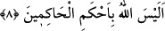

sokulması, sonra kemale erişmesi için halden hale getirilmesi, ardından tekrar gerisin
geriye noksanlaştırılmaya başlanması Allah Teâlâ’nın öldükten sonra diriltmeye ve
hesaba çekmeye kudretine en büyük delildir. Şu halde ey insanoğlu böylesi kesin bir
delilin ardından hakkı yalan sayman sebebiyle seni yalancı konumuna düşüren nedir?
8. Allah, hüküm verenlerin en üstünü değil midir?
Buraya kadar zikredilen şeyleri yapan Allah yaptıklarında ve planlamasında hakim
olanların en hakimi değil midir? Ki öldükten sonra yeniden diriltemeyeceği ve cezâ
veremeyeceği zannediliyor. Bir başka ifâdeyle Allah Teâlâ bu konuda işi sağlam
yapanların tümünden daha sağlam değil midir? Çünkü hakim demek işi sağlam yapan
demektir. Bu da onun kudretinin tam, ilminin kâmil olmasını gerektirir. Çünkü onun
ahkemu’l-hakimiyn olmaması imkansızdır. Madem ki böyle olmadığı imkansızdır o
zaman Allah Teâlâ’nın yeniden diriltmesi ve amellere karşılık vermesi kendiliğinden tek
seçenek hâline gelmiş olur.
Bu âyete; Allah hüküm verenlerin içinde seninle seni yalancı sayanlar arasında hak ve
adâletle hüküm verenlerin en üstünü değil midir? şeklinde mânâ vermek de mümkündür.
Arapçada “hakeme beynehum” ifâdesi hüküm verdi demektir. Dolayısıyla bu kelime
“hüküm verme” anlamına gelebilir. Bu âyet, hakkı yalan sayanlara yönelik bir tehdiddir.
Allah Teâlâ’nın onlar hakkında lâyık oldukları hükmü vereceğine işâret etmektedir.
Peygamber Efendimiz (s.a.) namaz dışında bu sûreyi okuduğunda “belâ ve ene ala
zalike mineşşâhidiyn” derdi. Bunun anlamı: “Evet ben de buna şâhid olanlardanım”
[158] demektir. Nitekim Aynu’l-maânî’de bu şekilde kayıtlıdır. Peygamber Efendimiz
(s.a.) bunu sahabîlere de emrederdi. Çünkü o (s.a.) bir hadis-i şerifinde şöyle buyurur:
“Kim ‘Allah, hüküm verenlerin en üstünü değil midir?’ âyetini okursa; evet ben de
buna şâhid olanlardanım” [159] desin. Başka bir hadis-i şerifte de:
“Kim bu sûreyi okursa Allah Teâlâ ona iki haslet bahşeder. Bunlar kul dünyada
olduğu sürece kendisine verilecek olan âfiyet ve yakîndir. Ayrıca bu kula sûreyi
okuyan kimselerin sayısı kadar ecir ve sevap verilir.” [160]
Allah’ın avn ve yardımıyla Tin sûresinin tefsiri sona erdi.
[149]. Kurtubi, XX, 110
[150]. Kurtubi, XX, 110
[151]. Kenzu’l-ummal, X, 41
[152]. Acluni, II, 368